用外套、叠穿、色彩与材料计划建立秋冬系列的结构骨架
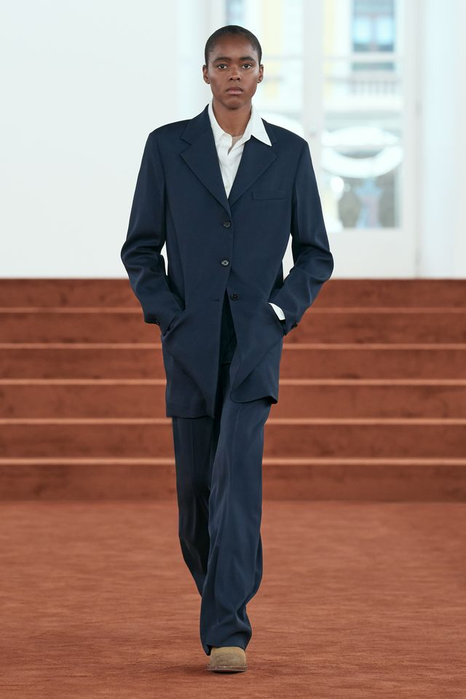
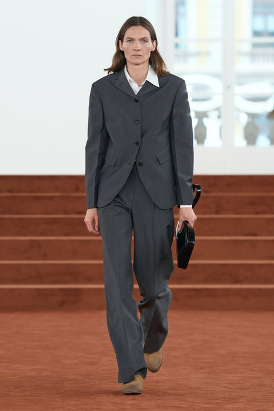
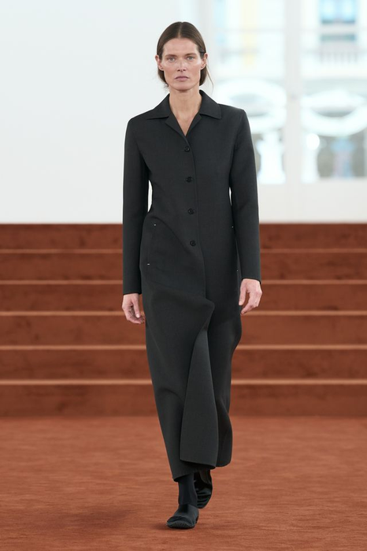
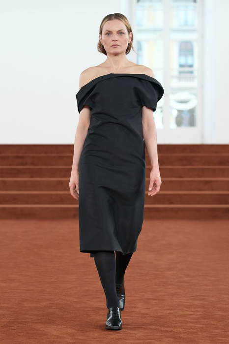
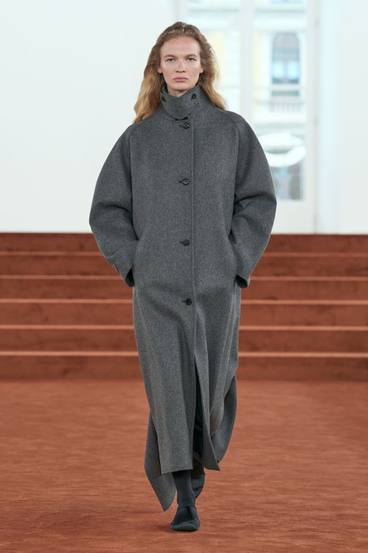
前8周建立方法并完成中期验证；后8周深化春夏与秋冬系列，最终独立完成主题系列与答辩。
不是把颜色换深、把衣服加厚，而是让每一档外套都能说出它挡什么、重多少、谁会穿。
四件事要一起决定：用什么对立词立概念（概念张力）、分几档外套（外套梯度）、里面穿得下吗（叠穿剖面）、颜色占多大面积（CMF面积）。
四项抢的是同一份重量，只定一项另外三项就会失控。
厚度、体量、活动量三者同时上升时，先牺牲哪一个？秋冬不等于深色堆叠。
难在"减"，不在"加"。
秋冬概念句 + 三档外套主线 + 叠穿剖面 + 一版说得出重量理由的五款CMF骨架。
说不出为什么这么重，就还没定完。
秋冬概念与外套主线板：含概念张力、品类梯度、色彩比例、材料功能与风险说明。
下课前交，缺一项不算完成。
第09周回答“春夏这五套怎么编排”；本周回答“把同一套编辑方法转到秋冬，从外套主线出发”。
下面五项来自《25级〈女装设计〉课程大纲》与《考核大纲》原文，说明本周的每一项输出将落到哪里、如何计分。
原文：“培养学生女装产品的设计能力”。
外套梯度与叠穿系统，就是把概念变成可开发产品的那一步。
原文：“对女装的美学原理以及设计逻辑有宏观认知”。
色彩面积与明度差，属于可计算的美学判断，不是个人偏好。
三大考核块之一，占比 40%（与“美学原理”并列最高）。
秋冬是第二个完整系列，直接进入这一块的评分。
概念张力图、三档外套主线、叠穿剖面与CMF计划，计入课堂表现与作业。
课堂没留下记录的判断，不计入。
本周的秋冬骨架进入期末系列，按六项标准（10/10/20/20/20/20）评分。
这周定下的重量，期末改起来代价最大。
教材用色相环与明度阶把"配色"拆成两个可测的量：明度差与面积比。
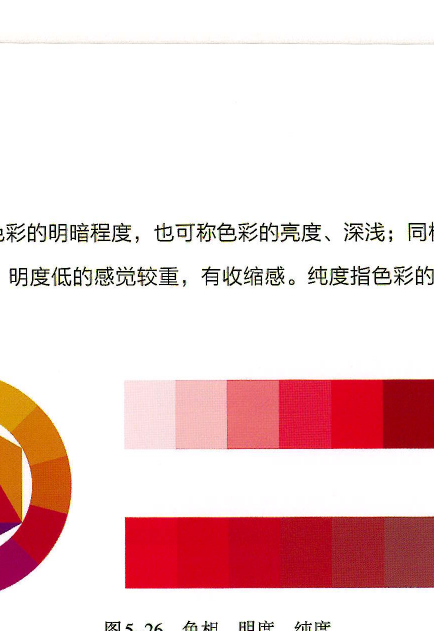
图中不变：色相环给出的是相对关系，不是具体颜色——同一组色相在不同明度下会得到完全不同的重量。
图中变化：从纯色到加白、加黑，明度阶每移动一格，同样面积的色块视觉重量就改变一次。
秋冬的用法：先定主色（约70%）、辅助色（约20%）、强调色（约10%），再用明度差拉开三者，而不是靠增加颜色数量。
观察任务：先分出主色、辅助色与强调色，再估算三者在整体中的面积比例。
来源：于芳《服装设计基础与创意实践》（中国纺织出版社，2023），第71页。教材图像只作方法证据，课件文字为课程改写；图像保持原始比例，仅做边界裁切。
色卡本身不是色彩故事——要落到品类、位置与面积上才算成立。
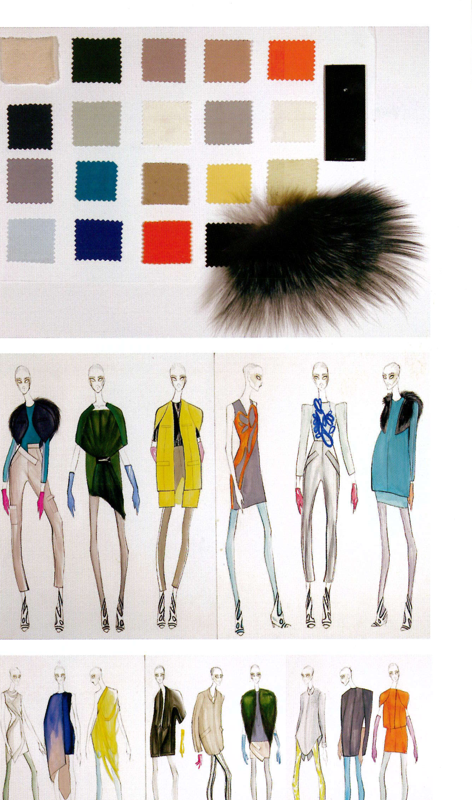
色卡的构成：二十余块色样中，米、驼、灰、黑等中性色占三分之二以上；橙、黄、蓝、红只占少数。
面积对应：到了款式图上，中性色铺满衣身，高彩色只出现在手套、局部色块与配饰——色卡上的数量比，就是画面上的面积比。
材料同框：毛皮与漆面样片和色卡放在一起，因为同一个颜色在不同表面反射下，视觉重量完全不同。
观察任务：把色卡放回具体品类与位置，说明哪一块承担强调、哪一块承担连接。
来源：Steven Faerm《The Fashion Design Course》（Quarto Publishing plc），第52页。课件文字为课程改写；图像按教学需要裁切局部，未改变原始比例。
术语必须能够指导一个动作或判断。
以不同长度、重量和角色的外套建立秋冬系列结构骨架。
为内层和中层预留的活动量、厚度与结构空隙。
色彩、材料、工艺 与品类、位置和面积的系统分配。
保温、挡风、透湿和可调节性对设计结构提出的实际要求。
“核心词汇”页定义了四个词；这一页只讲它们互相冲突时会发生什么——秋冬的每一克重量都要有人负责。
两个对立词要在短、中、长三档上各自成立；只在长大衣上成立的概念，是单品不是系列。
失败信号：三档里只有一档能说清概念，其余两档靠颜色凑数。
外套加长，内层就要减薄；否则围度不够，袖窿先卡住。
失败信号：长大衣画得好看，但里面穿不下中层——只在纸上成立。
每加一层，肩、袖窿与下摆的活动余量同时下降。
失败信号：层数够了，但抬臂、坐下、系扣任一动作做不出来。
深色显轻、浅色显重；同样克重换个颜色，视觉重心就移位。
失败信号：把秋冬等同于深色堆叠，五套看起来一样重。
同一个御寒问题，三位设计师给出不同解法。不问"哪一种更东方"，只问这个做法解决了什么、代价是什么。
靠层数：多层薄料叠加，活动量随层数下降 ↔ 靠单层克重：一件厚外套，里面留空。
本周两例：Xu Zhi 用针织＋大衣＋毛皮层层加码；Jil Sander 用一件厚呢，内层只留衬衫。
轮到你：你的五款走哪一条？层数路线要先算袖窿余量。
靠长度：短、中、长三档 ↔ 靠形态：大衣、斗篷、短外套。
本周两例：Jil Sander 靠长度（臀下→及膝→及踝）；Calvin Klein 靠形态（大衣→斗篷→短外套）。
轮到你：长度分级容易读，形态分级更难重复——你的三档用哪一种？
放在边缘：流苏、毛边、未收口 ↔ 放在领口：翻领、立领、无领。
本周两例：Xu Zhi 把识别点放在边缘；Calvin Klein 全部压在领的体量上。
轮到你：识别点只有一个才记得住——你的那一个在哪里？
先找出五套共用的边缘处理，再看外套克重如何一级级往上加。
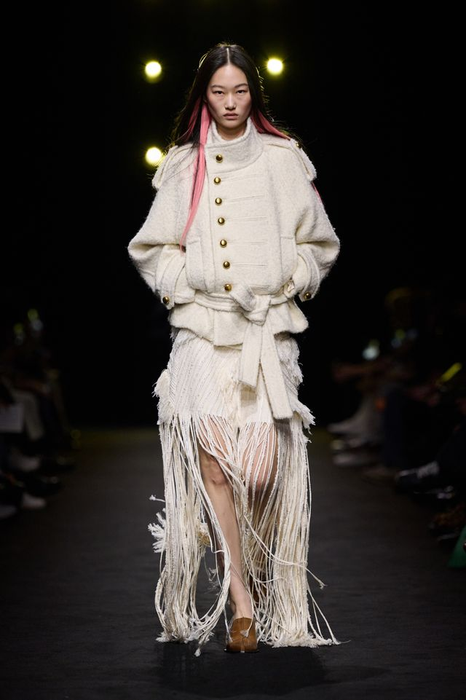
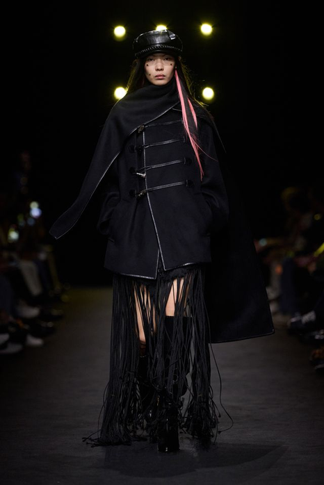
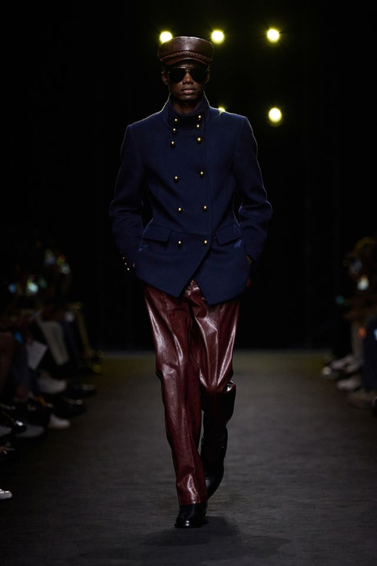
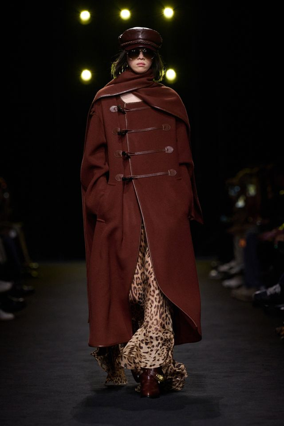
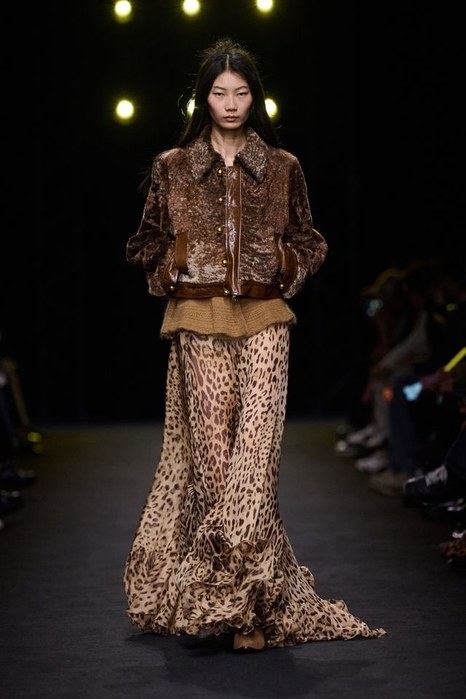
课堂回答：把五套的外套按克重排序，最重与最轻之间差了几层？这个跨度够不够撑起一个秋冬系列？
颜色与装饰都被压到最低，外套形态与领的体量成为唯一的分级工具。
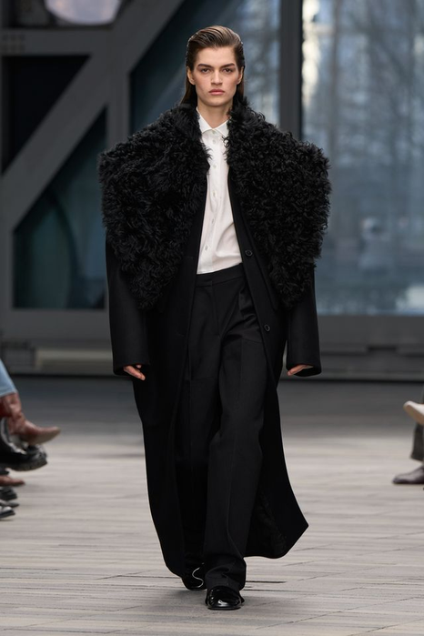
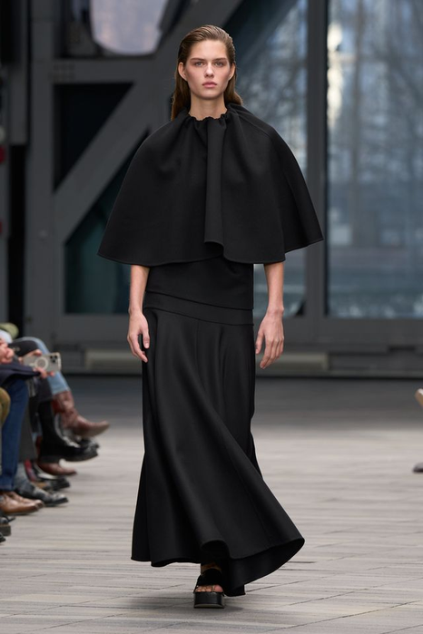
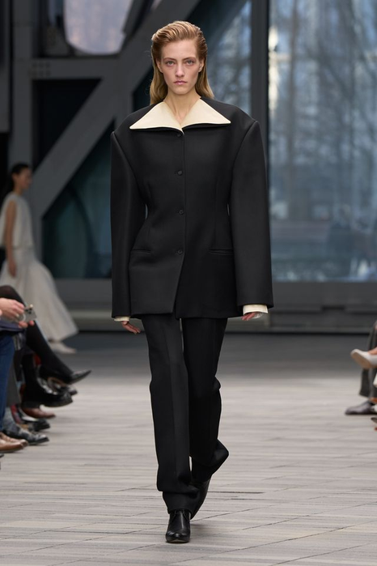
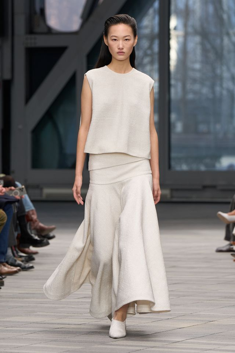
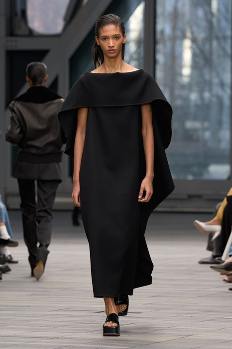
课堂回答：只用黑与米白两色，靠什么把五套分出层级？如果加入第三种颜色，会先破坏哪一项？
上一周的结构判定继续有效。变的是重量、支撑和层数这三项的算法。
春夏定下的那条代码继续用。换季换掉代码，等于重新开一个系列。
检验：秋冬五套里还认得出它吗？
同一个体量，春夏靠剪裁撑，秋冬可能靠材料自撑或内衬。支撑手段变了，纸样就得重算。
写下每一套的目标克重区间。
每加一层，肩、袖窿、下摆的活动余量同时下降。层数是设计决定，不是穿衣习惯。
画叠穿剖面：身体—内—中—外，标厚度。
深色显轻、浅色显重。同样克重换个颜色，视觉重心就移位。
把春夏配色直接搬来，先看它会不会变重。
东华大学肖宜昀。左边是调研，中间是六套，右边是成衣——秋冬要加的重量，就加在中间这一步。
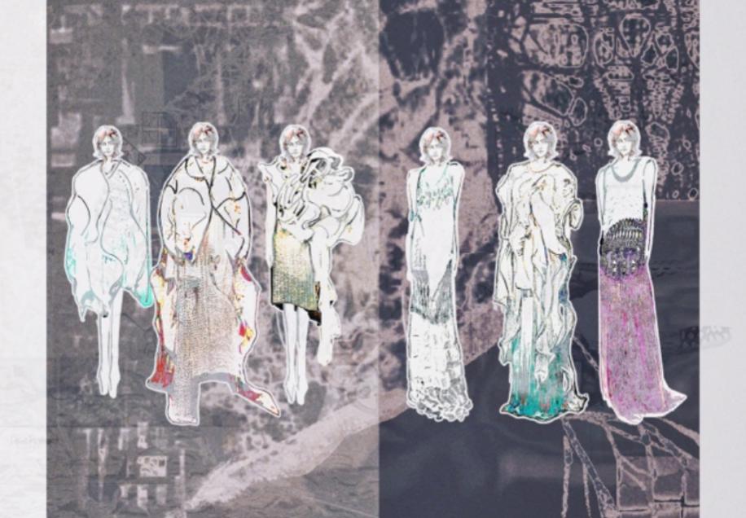
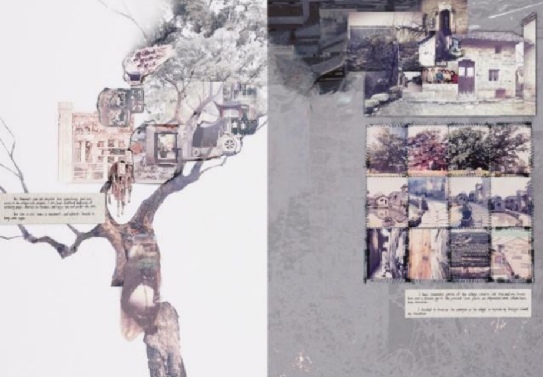
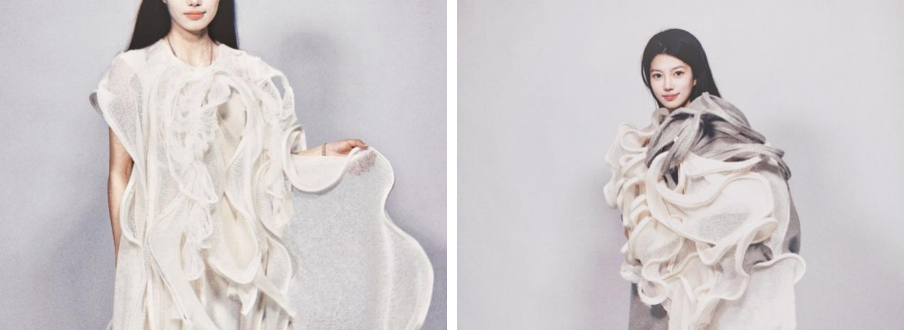
来源是具体的地方树的弧度、老照片的色调、墙面的层叠——不是“乡愁”这个词，是可以指认的物件。
规则跨过了品类同一条曲率既做成外轮廓，也做成内部褶皱。这就是秋冬外套主线要求的可迁移性。
秋冬的差别在克重把这一套换到秋冬，曲率不变，但材料克重和支撑方式必须重算。这是本周的任务。
每个阶段结束都要留下图像、标注或修改记录。
将主题写成‘A 与 B 的冲突’，并列出各自对应的结构和材料证据。
从案例与教科书中区分短、中、长外套的长度、体量和角色。
绘制身体—内层—中层—外层剖面，标出厚度、开合和活动空间。
用同一概念规则完成短、中、长三种轮廓，不进入表面装饰。
第1课时定下了概念与外套主线；第2课时把它换算成色彩面积、材料性能与可开发的骨架。
方法与实验9′ → 实操28′ → 讲评与评价5′ → 预告与收尾3′
每个动作都必须产生可比较的前后版本。
增加身体周围的连续覆盖，测试保护感与活动受限的边界。
通过结构层、填充或硬挺材料扩大轮廓内部空间。
用腰带、抽绳或局部收束控制大体量，制造硬壳与柔体的张力。
让内、中、外层形成明确长度阶差，而不是随机露出边缘。
将强调色限制在领口、内层、下摆或配件，控制视觉焦点。
保持结构不变，只替换材料重量或表面，观察廓形是否仍成立。
设计全闭、半开、可拆或可调闭合，连接温度与造型变化。
删除无功能的厚重层，保留最能表达概念和季节性的结构。
矩阵用来生成与比较，不要求把所有组合都做成最终款。
| 变量 | A | B | C | D |
|---|---|---|---|---|
| 外套长度 | 短夹克 | 臀下 | 小腿 | 踝长 |
| 体量位置 | 肩部 | 躯干 | 袖部 | 下摆 |
| 闭合方式 | 全闭 | 单点 | 缠绕 | 可拆 |
| 材料性能 | 硬挺 | 垂坠 | 蓬松 | 弹性 |
| 色彩比例 | 70/20/10 | 60/30/10 | 同色阶 | 局部高彩 |
怎么用：先锁定“外套长度”一行分出三档，其余四行每档只移动一格——移动两格就分不清是哪个变量在起作用。
五套的分配：短、中、长各一套，剩下两套用来做叠穿与色彩面积的对照，不要五套都做长外套。
无效组合：“踝长＋蓬松＋全闭”重量与活动量同时超标；“短夹克＋垂坠＋可拆”失去御寒理由。写下你删掉的组合与理由。
基准型与 V1–V3 必须用同一视角、同一比例、同一标注；否则差异来自画法，不是设计。
固定长度、开合与细节，记录基准材料下的轮廓和活动量。
先写死：不可改变的三项（长度／闭合／领型）。
只改变材料克重，观察肩线、垂坠、褶量和下摆张力。
记录：克重从多少到多少，肩线与下摆各下沉几厘米。
只增加一个中层，检查外套所需的围度、袖窿和闭合余量。
记录：加层后围度增加多少，袖窿是否还够抬臂。
结构不变，仅改变强调色的位置与面积，比较视觉重心。
记录：强调色从哪一块移到哪一块，视觉重心上移还是下移。
把重量、层数、品类与顺序同时放回系列编排——五套各占外套主线上的一个位置。
建立概念的日常入口，强调上身比例与搭配灵活性。
连接短外套与长大衣，承担主要穿着场景与叠穿功能。
以体量、材料或闭合方式最完整地表现概念张力。
降低重量，扩大跨季穿着并调节系列节奏。
露出内层结构，证明叠穿系统在脱掉外套后仍然成立。
检查：把任意一套抽走，外套主线上出现哪一段空白？没有空白的那一套，就是多余的。
最后5分钟必须写下下一步动作，不能只停留在讨论。
以 70/20/10、同色阶和局部高彩三种方案快速填色比较。
为每个外套选择主材料、结构材料和内层材料，并写出性能理由。
配置外套、内搭和下装，使重量、长度与色彩形成系列梯度。
标出活动受限、过重、过热、材料冲突与不可制造风险，提出一项修正。
评审者只有 60 秒。四类证据要能各自独立被找到，不能混在一张图里。
2 个对立词、4 条设计规则和对应研究证据。
不合格：两个词不构成对立，或找不到对应的研究证据。
短、中、长外套统一比例草图与产品角色说明。
不合格：三档比例不统一，无法直接比较长度与体量。
主辅色比例、材料性能、表面处理和三层关系。
不合格：只有色卡没有面积比例，或剖面看不出三层厚度。
显示外套节奏、叠穿关系、品类分配与风险标注。
不合格：五套里有两套落在同一档外套长度上。
禁止只说好看、不好看、再丰富一点。
你的判断在图、样片或系列编排的哪里？
本周指向：指出外套主线上的具体档位与造型编号，不能只说整体偏厚。
这个形式为何回应主题、身体或市场条件？
本周指向：说明这个厚度／层数回应的是气候、场景还是产品角色。
应该保留、删除、替换还是补位？
本周指向：若删掉这一档，外套主线出现空白还是重复？
下一版具体改变哪个变量，如何验证？
本周指向：指定矩阵中的一行，说明改动后叠穿余量如何复验。
标记为“成立 / 部分成立 / 需重做”，并写下证据位置。
命题清楚，并能转化为结构和材料决策。
短、中、长品类角色明确，身体空间合理。
CMF选择有性能依据，面积与位置受控。
厚度、活动量、温度与开合形成系统。
5套 关系清晰，图面可直接进入开发。
下周不重讲方法，直接用你这周锁定的三档外套开始——材料必须从本周提交物中取用。
短、中、长各一张，标注长度、闭合与目标克重。
下周要用真实材料检验这三档能不能站住。
内、中、外三层的厚度与活动余量记录。
纸上够用的余量，样片上常常不够。
为每一档准备 2 块面料小样，注明克重、手感与来源。
没有小样就无法做对照拍摄。
用一句话写出“我最不确定的是______能不能撑住______”。
下周第一件事就是用样片回答它。
平时训练不是零散作业，而是期末系列的证据积累。
主题回应当下，并形成自己的问题与立场。
提炼的设计元素与当季趋势、审美和来源一致。
款式回应身体、动作、场景与真实穿着需求。
比例、色彩、材料与细节共同形成完整造型。
顾客、价格、品类和使用情境边界清楚。
风格统一，同时具有角色、搭配与造型变化。